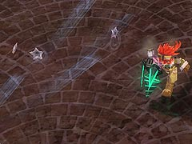
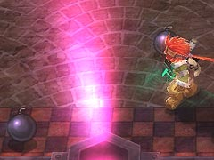
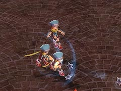
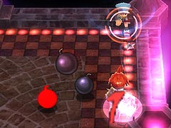

目次 > ゲームについて > 日本Falcom 攻略 > ZWEI II > G-コロッセオ > ちびっこ忍者杯
らんの眼
ZWEI II (ツヴァイ 2、ZWEI II Plus)
| 概要 | 情報 | 攻略チャート |
| フード交換 | ペットについて | ボス戦 |
| 敵キャラ一覧 | ハンターランク | G-コロッセオ |
| アイテム一覧 | ガジェット一覧 | トレジャー一覧 |
| ダンジョン一覧 | クリアデータ特典 | Plusの追加要素 |
| ZWEI II攻略へ | 目次へ戻る |
| スバル 前半・中盤 |
| アルウェンならば、遠距離から攻撃できるのであまり苦労せずに倒せてしまいます。 しかし、ラグナの場合は攻撃の隙を突いてダメージを与えるしかなく、苦労します。まあ、G-コロッセオの殆どの相手に対してラグナ苦戦するのですが。 前半のスバルは手裏剣による攻撃しか使ってきません。  手裏剣を投げる時間により2 種類の攻撃パターンがありますが、ジャンプでよければだいたい何とかなります。 また、床に刺さった手裏剣に触れてもダメージは受けません。  ある程度ダメージを受けると、攻撃パターンが増え、「火とんの術」とワープを使うようになります。 「火とんの術」と言ってから爆弾を置きます。体力が少なくなるにつれて置く数が増えるので注意してください。 ワープは一定時間消えて、どこからとも現れるだけなので、さほど注意する必要はないです。 |
| スバル 後半 |
| 体力が残りわずかになると、スバルが3 体に分身します。分身の2 体を攻撃してもスバル本体にはダメージを与えられないので注意してください。  また、分身はある程度ダメージを与えると消えるので、余計な攻撃を受けたくない場合は早めに倒しておいた方がいいです。  後半のスバルの火とんの術は爆弾を4 つ置くので、かなり注意してください。 |
| 概要 | 情報 | 攻略チャート |
| フード交換 | ペットについて | ボス戦 |
| 敵キャラ一覧 | ハンターランク | G-コロッセオ |
| アイテム一覧 | ガジェット一覧 | トレジャー一覧 |
| ダンジョン一覧 | クリアデータ特典 | Plusの追加要素 |
| ページの上部へ | ZWEI II 攻略へ | 目次へ戻る |